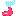
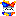

playable thingalings are in .wav form

- symbol for an unfinished/demo song
- symbol for a joke songTrance
Trance (ultrabox)
made out of the end part of glacia from mblep. now it sounds all dreamlike and stuff.
After-Dark Encounter
After-Dark Encounter (ultrabox)
made it out of a part of octuple kickflip from mblep's bonus section. now it sounds cool and evil.
ill beat
ill beat (ultrabox)
made this for april fool's day 2026
harvest samba tuff remix
harvest samba tuff remix (ultrabox)
making this made me realise harvest samba is a genuinely good and well made song
uses the amen breaks from huh from mblep
dj khaled actually worked on this one with me. trust.
Blossom Buster
Blossom Buster (ultrabox)
a prediction for deltarune chapter 5's battle theme using the melody from shop 3
i only finished this demo like 20 minutes before chapter 5 dropped lel